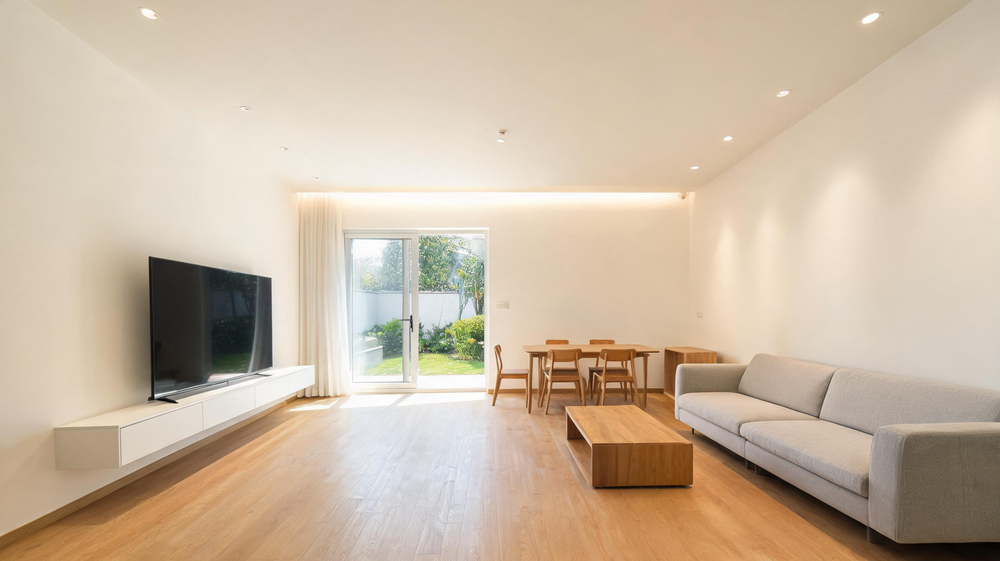
精装客厅效果图：原木地板、布艺沙发，玻璃推拉门外是未来的庭院。房子还没动工，先在效果图里住了一遍。
看到 Seed-2.1-pro-0915 升级文档的时候，我正被老家的自建房图纸卡了一个多月。文档里最打动我的两条：多模态能力——能识读工程图纸、理解 3D 模型；复杂任务理解——能把一个长流程拆开、一步步做完。这让我觉得，值得一试。
老家在北方县城里，宅基地 15.5m×17m。我要建一栋四层框架自建房，目标很实在——以租养房：一层 4.2m 层高做通高大厅兼商铺，二三层围着中央 4×5 米长天井做「走马楼」，每层 8 套小一居、两层共 16 套收租，四层留给自己家三代人住。
听起来简单，画起来全是约束：东侧贴邻居，东墙一套采光窗都不能开；西侧临 3 米胡同，是唯一出入口；北排要保住 6.5m 堂屋深度，天井只能做成东西窄、南北长的 5 米；楼梯要四跑绕天井转上去……
动手之前，我其实没太大信心。以前用 AI 画概念图很容易：格局、分区、大概尺寸，图面好看就行。可这次我要的不是概念图，是能拿去施工的图纸——墙体几何不能错、门窗不能打架、面积必须算得过来，还得一条条满足我家的实际条件。
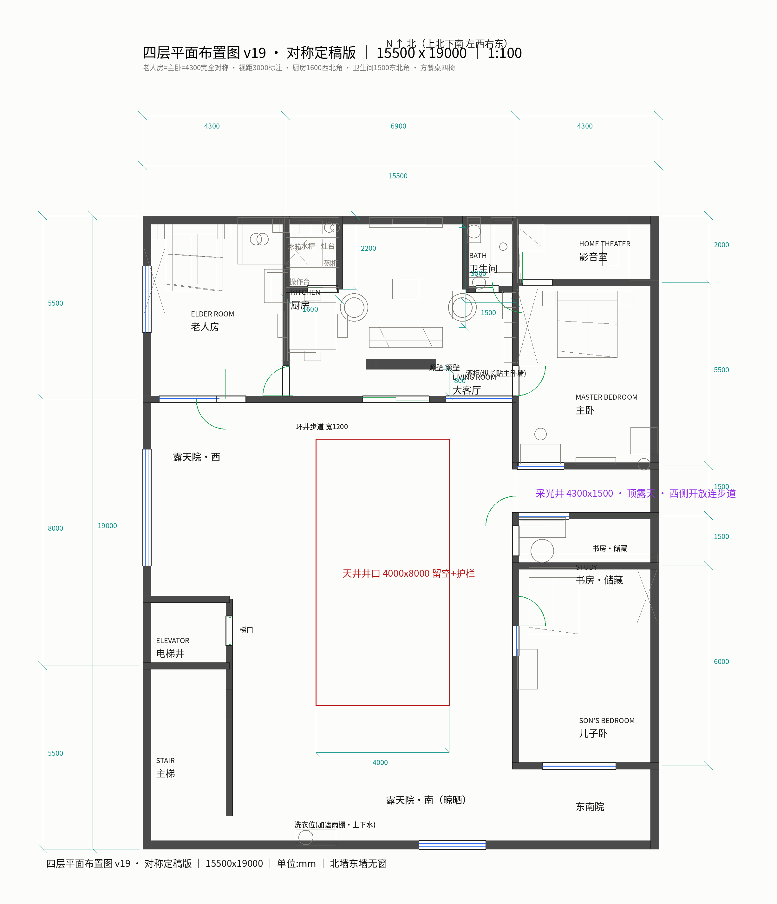
22 版废图纸里的其中一版：对称布局、4×8 天井，图面好看但算不过账
在这之前，我用其他模型改过一版又一版，四层平面从 v5 一路改到 v22，始终没搞定。看着那一摞半成品，我抱着试一试的心态，把 22 版图纸和我这一长串要求，一起丢给了豆包工作里的 Seed-2.1-pro-0915。
然后它就自己跑了。整整一个下午、三四个小时，中间不需要我参与。等它交活儿，给我的是一份解决了基本几何错误、并且一条一条验证过我所有需求和实际限制的图纸。
执行过程中，我看到了它的思考过程：它详细研究了之前模型画出的所有版本图纸，一条一条和我提出的需求对照，把里面的几何错误、建筑结构错误一条一条找出来，再自己调整、修改。
最终交给我的图纸，虽然不是尽善尽美，但已经没有了基础错误。看到这样的结果，我信心大增。
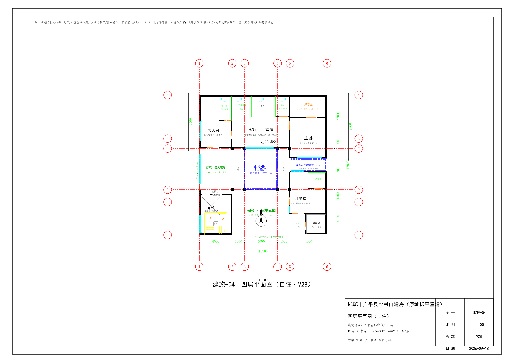
两轮定稿的四层平面：三个卧室、一个堂屋、凹槽入户，尺寸与动线核验过
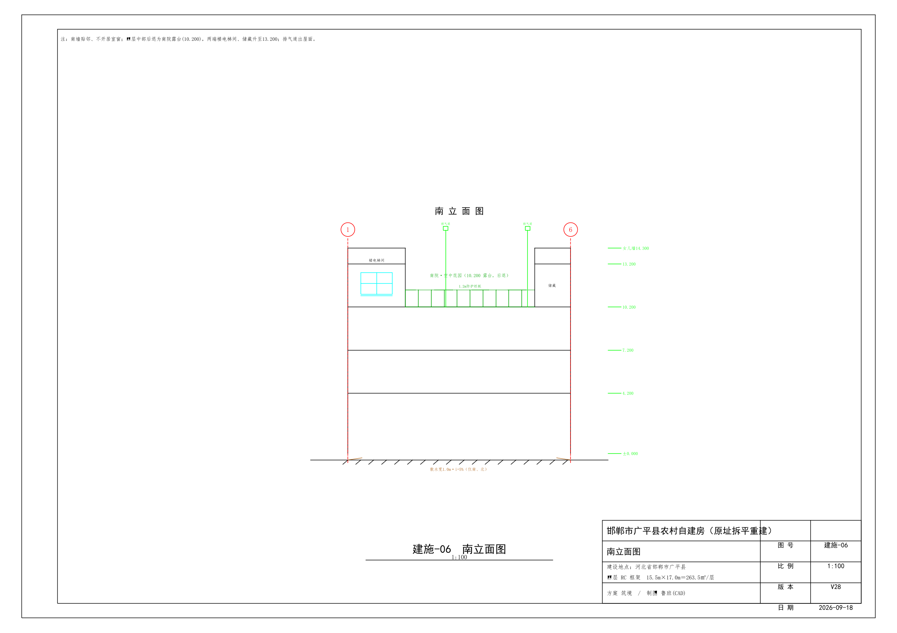
同源几何的南立面：天井、栏板、开窗与平面一一对应
我把具体设计上的一些细节，按照心中理想的状态，又提了几条建议。它又跑了一轮，平面图纸就搞定了——整个过程只用了两轮。
从这张定稿的四层平面能看到：三个卧室、一个堂屋客厅、影音室只留一个入口、采光井南移、储藏挪东南角，全部落位；南墙落地窗保留、两侧做入户凹槽从环廊进客厅。每一处都经过了净宽和动线核验。
平面图纸搞定后，我又提了进一步的要求：用 Blender 把平面图纸生成 1:1 的 3D 白模，并且要能用真人视角在里面 3D 漫游。
同样经过了一轮——这一轮耗时很长，足足跑了四五个小时——我就拿到了一个可以在浏览器里直接打开的白模版本。
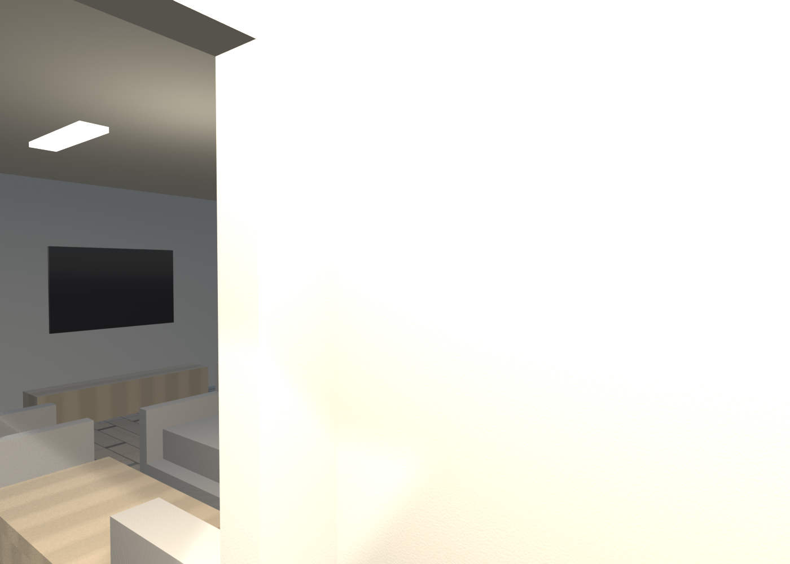
精装版客厅人视：材质、家具与光影一并到位
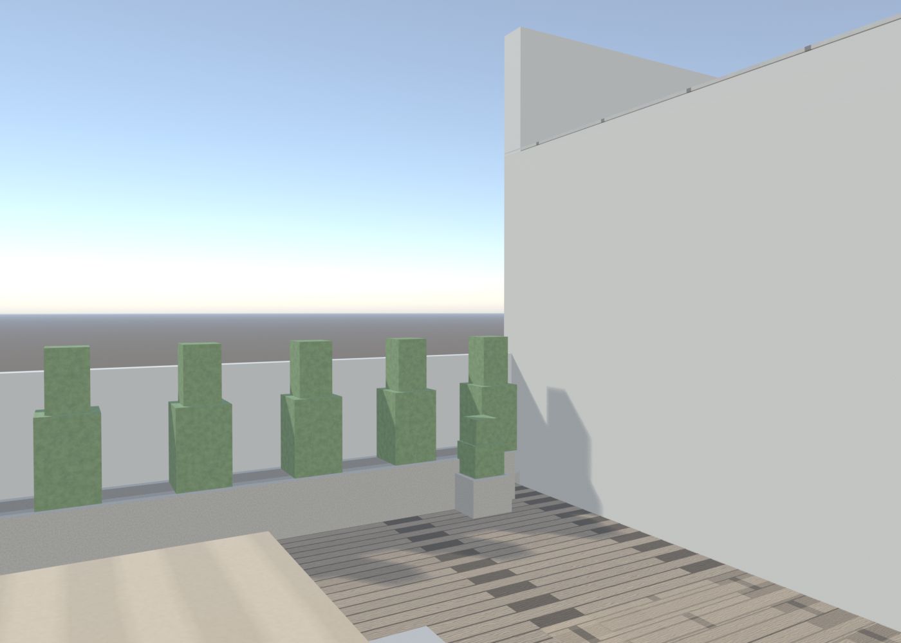
精装版四层空中花园：天井与南院有了真实的样子
进去测试的时候，我发现两个问题：方向键映射有错误；模型都是灰白色的，看不出纵深感、层次感。
于是我又加大了难度：要求它给 3D 白模加上真实材质，按照它自己的设计在空房间里摆上家具，把家具按实际材质渲染出来。就这样，有了最后这版「精装版」的漫游版本。
客厅、主卧、影音室、出租公寓，一间间都带上了材质和家具；四层空中花园也渲染出了样子。
3D 漫游看房入口：WASD 行走、鼠标转视角、数字键直达楼层
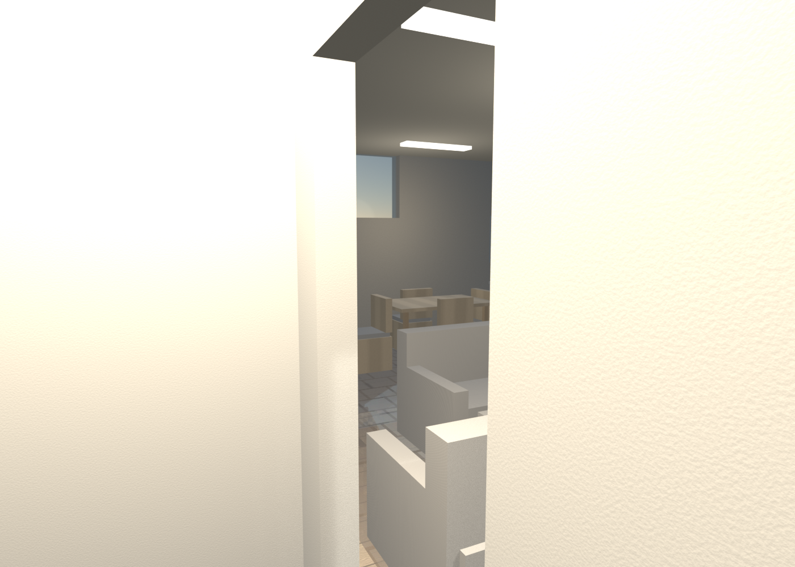
四层入户凹槽人视：柱包进玄关、门开柱北，透过门洞能看到客厅
精装版完成后，之前的问题都改正了。我在浏览器里实际体验了我最关注的四层——留给自己自住的那一层。
仔细看完，这个结果让我惊叹。以前真的不敢想象，AI 可以自己把一个真实可用的建筑设计到这个程度，而且过程中没有使用任何专业软件、专业工具。它在执行任务的过程中，自己下载了生成 AutoCAD 兼容图纸格式的插件，按照我的要求安装了 Blender 来生成 3D 模型，还安装了 FFmpeg 等工具。全程我只提了三次要求，就做成了现在这版。
连客厅的入户动线都是它自己优化的：落地窗正对天井不能改门，它就在两侧做凹槽玄关；凹槽撞上结构柱，它把凹槽加宽、柱两侧绕行、门开在柱北，还生成人视渲染让我确认。不能说尽善尽美，但这个结果已经非常超乎想象了。
四层四个角度的照片级效果图，与 3D 漫游版同角度实景放在一起对比——空间、家具、门窗一一对应：左边是照片级效果图，右边是浏览器里可自由行走的实时漫游。
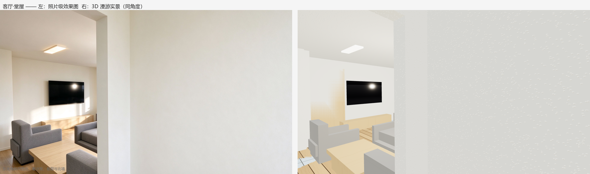
客厅·堂屋：效果图与 3D 漫游同角度对比
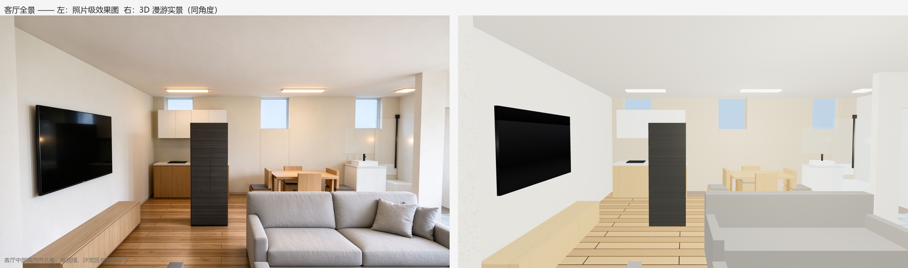
客厅全景：效果图与 3D 漫游同角度对比
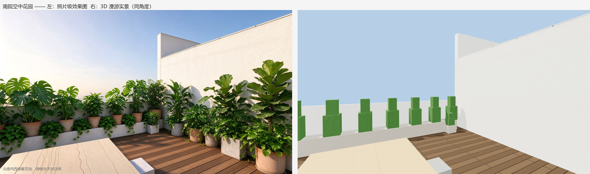
南院空中花园：效果图与 3D 漫游同角度对比
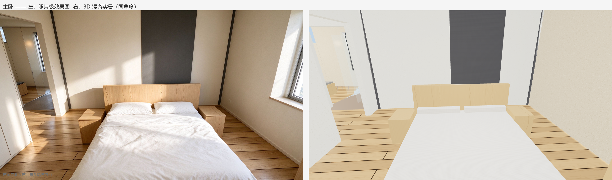
主卧：效果图与 3D 漫游同角度对比
自从我的 Claude 账号被封之后，我就再没使用过国外的闭源大模型。国内的模型我体验过不少，却从未遇到过能在多模态图纸设计、3D 模型这方面做到这个程度的。
整个任务过程中，它使用的时间非常长，我的这个真实任务，复杂程度可以说也是超乎想象的。让我意外的是，仅仅经过三轮人工参与，就拿到了今天这样的结果。这一版 Seed-2.1-pro-0915，真的让我收获了意外的惊喜。
我把生成的 3D 模型上传到了我的 GitHub：https://wanmeime.github.io/house-design-v28/，有兴趣的朋友可以前往验证。
最后我真的想说一句：国产模型进步太快了。真心由衷地开心，看到我们中国的大模型在实用程度上、在复杂任务的完成程度上，以及多模态的理解上，能够有这么长足的发展和进步。
推荐封面：按真实 3D 模型比例重渲染的四层空中花园效果图（配文「没建成的家，先在电脑里住了一遍」）。画面同时包含天井、花厅与南院，与漫游版几何同源；若平台封面适配 2.35:1，可直接以该图为主视觉，标题文字压在画面左上留白处。
内容验真：本文全部图片均为本项目真实产物：22 版历史图纸（v5~v22）、施工图 DXF/PNG、Blender 3D 白模与精装模型、EEVEE 渲染图、3D 漫游页，均由 Seed-2.1-pro-0915 配合豆包工作生成，几何同源；文中建筑参数（15.5m×17m、4×5m 天井、二三层各 8 套共 16 套、四层 3 卧 1 堂屋）来自项目脚本与验证记录。文中「其他模型」指升级前使用过的旧模型，对比为同一项目内的真实使用体验。文中 GitHub 链接为作者自建公开仓库 wanmeime/house-design-v28，可通过 GitHub Pages 在线访问验证。本文为方案推演记录，正式施工前需由有资质的设计院按当地规范复核出图。
—— 完 ——